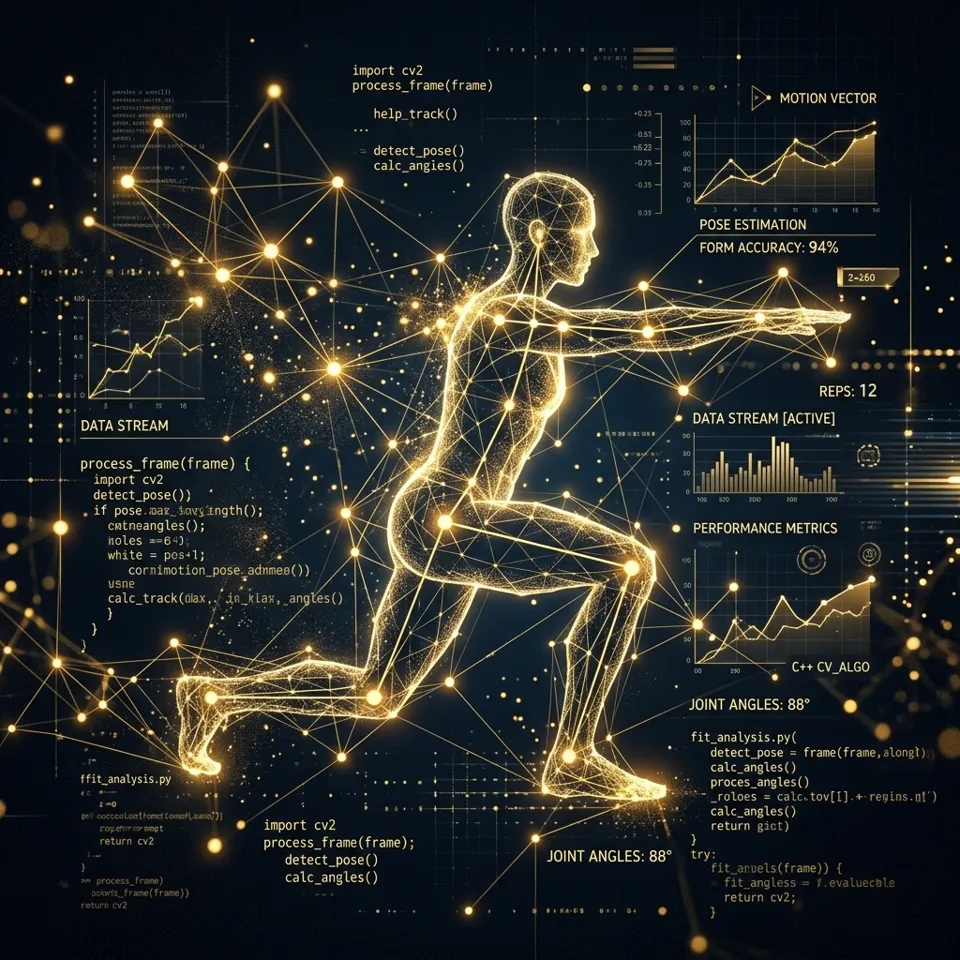

Project documentation
Computer Science & AI senior capstone: the motivation, the architecture, what we learned about its limits, and the research it builds on.
Problem statement & motivation
Resistance exercise provides proven cardiovascular, metabolic, and musculoskeletal health benefits. However, inexperienced individuals face substantial risks of joint strain and acute injury when lifting with improper posture or compromised range of motion.
While wearable inertial measurement units (IMUs) and motion capture suits exist, they require expensive specialized hardware. This academic project investigates whether consumer-grade webcams and edge machine learning can deliver accurate biomechanical form validation directly within a web browser.

Implementation architecture
The application is built on a modular client-side pipeline designed for high frame rate, low computational latency, and total data privacy:
- MediaPipe Pose Landmarker: Detects 33 3D skeletal landmarks per video frame using a lightweight convolutional neural network running via WebGL/WebAssembly.
- Trigonometric angle calculation: Applies two-argument arctangent formulas (
Math.atan2) to compute joint angles between anatomical triplets (e.g. shoulder–elbow–wrist). - Finite state machine (FSM): Evaluates eccentric and concentric movement phases against physiological thresholds to validate reps.
- Privacy by design: No video data is transmitted over the internet; all processing is local.

Limitations & future research
As an academic prototype, several real-world limitations were identified during testing:
- Monocular depth ambiguity: Single 2D camera feeds lose depth accuracy when exercises involve non-perpendicular planes of motion.
- Self-occlusion: Certain angles cause overlapping limbs, resulting in lower tracking confidence scores from the pose model.
- Lighting conditions: Insufficient illumination or busy visual backgrounds can introduce slight landmark jitter.
- Future work: Exploring Temporal Convolutional Networks (TCN) for continuous phase prediction and dual-camera fusion.
Student project contributors
Computer vision lead
MediaPipe & pipeline integration
Biomechanics & maths
Vector angles & FSM rep logic
Front-end engineering
HTML5 canvas & UI architecture
Academic references
- Bazarevsky, V., Grishchenko, I., Raveendran, K., Zhu, T., Zhang, F., & Grundmann, M. (2020). BlazePose: On-device Real-time Body Pose tracking. arXiv preprint arXiv:2006.10204.
- Baechle, T. R., & Earle, R. W. (2008). Essentials of Strength Training and Conditioning. National Strength and Conditioning Association (NSCA), Human Kinetics.
- Lugaresi, C., et al. (2019). MediaPipe: A Framework for Building Perception Pipelines. Third Workshop on Computer Vision for AR/VR at IEEE CVPR.